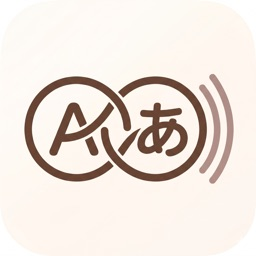

支持环境
Echoknot 当前作为 iOS 应用发布。具体设备与系统版本支持范围，遵循当前 App Store 的上线配置。 核心学习流程不依赖账号即可使用。

Echoknot for iOS本页面说明 v1.3 候选版本的实际行为：本地优先存储、AI 功能与限额、可选 Premium 备份、故障排查、隐私处理方式，以及使用 Echoknot 时适用的服务条款。App Store 公开上架可能要等 Apple 审核完成。
Echoknot 当前作为 iOS 应用发布。具体设备与系统版本支持范围，遵循当前 App Store 的上线配置。 核心学习流程不依赖账号即可使用。
核心数据读写走本地存储。仅在你主动触发 AI 能力时才会发起网络请求。 可选云备份还需要网络、有效 Premium 权限以及 Apple 登录。
| 功能模块 | 状态 | 实现说明 |
|---|---|---|
| knot 记录与编辑 | 可用 | 支持词条、释义、用法、锚点、标签；支持编辑与删除。 |
| AI 自动补全与详情刷新 | 可用 | 仅在用户主动触发时运行；成功请求会消耗每日自动补全额度。 |
| Echo 回声生成 | 可用 | 需选择同语言 knot，最少 3 个，最多 8 个。 |
| 每日 AI 使用限额 | 可用 | 自动补全 30 次/天，Echo 生成 10 次/天；计数按设备本地日历日重置。 |
| 外观、语言与字号 | 可用 | 支持浅色、深色、跟随系统；应用界面支持英文、简体中文与繁体中文。 |
| 收藏与最近记录 | 可用 | 收藏上限为 5 条，最近回声列表会规范为仅保留最新 5 条。 |
| 数据导出 | 可用 | 支持 JSON 与 PDF 导出（设置页与仪表盘）。 |
| Premium 权益 | 可用 | 可通过 App Store 订阅、符合条件的兑换码，或构建内配置的邀请码路径解锁。 |
| 可选云备份与同步 | 可用 | 需要有效 Premium 权益加 Apple 登录；不启用也可完整使用本地模式。 |
在仪表盘打开某条 knot 后进入详情页，可执行编辑。删除入口位于详情页的危险操作区域。
常见原因包括：选中的 knot 少于 3 条、混选了不同语言、当日免费 Echo 次数已用完、模型提供方配额已耗尽，或网络/服务暂时不可用。
在 v1.3 中，免费版每天可使用 30 次 AI 自动补全/详情刷新，以及 10 次 Echo 生成；Premium 每天为 200 次自动补全/详情刷新和 30 次 Echo 生成。
每日 AI 计数按设备本地日历日重置。应用会在启动、重新回到前台，以及 iOS 通知“跨天”或“显著时间变化”时刷新限额状态。
你可以把已保存的 Echo 标记为收藏。当前版本收藏上限为 5 条，取消后可继续收藏新内容。
可在“设置”中的导出入口操作，也可在仪表盘 all-knots 区域通过导出菜单操作。
重置会清空 knots、最近 Echo、收藏 Echo 和偏好设置，并恢复首启默认状态。
这里的“最近记录预览”只是仪表盘的布局偏好，用来控制最近 knot 的展示方式。 它不会解锁 Premium，也不会改变 AI 配额。
在“设置-外观”中可修改主题（浅色/深色/跟随系统）、应用语言和字体大小。 选择“跟随系统”后，应用会跟随 iOS 外观。
不需要。核心的记录、复习、Echo 生成与导出都可以在无账号状态下使用。 Premium 用于解锁更高 AI 配额以及可选云备份与同步。
Premium 解锁更高每日 AI 配额以及可选云备份/同步。Premium 生效后，你可以选择使用 Apple 登录。 符合条件的 App Store 订阅 Offer Code 会在对应期限内解锁同一 Premium 权益。
仅会把当前操作所需的最小文本发送到 Echoknot AI 后端。默认不会在后台自动发起 AI 请求。 后端使用 Alibaba Cloud DashScope/Qwen，供应商密钥不会进入 iOS 安装包。
Echoknot v1.3 默认采用本地优先架构。TangSpark 不会建立通用广告画像，核心使用流程也不要求你创建账号。
根据 GDPR 与 UK GDPR，用户通常享有访问、更正、删除、限制处理、可携带、反对处理及投诉等权利。 因为常规使用默认是本地优先，许多数据控制能力都可以直接通过应用内编辑、导出、重置或关闭可选云备份来完成。
美国部分州（含加州）隐私法律通常提供知情、删除、更正以及拒绝出售/共享个人信息等权利。 Echoknot 在常规使用流程中不出售个人信息，也不以定向广告为目的共享应用内容。
Echoknot 是语言学习产品。请不要把高敏感个人信息、支付信息、健康记录或其他秘密信息输入到 knot 内容中。 AI 功能也不适用于受监管或高风险场景。
请发送邮件至 hello@tang-spark.no，并附上： 所在地区（欧盟/英国或美国）、设备型号、iOS 版本与 App 版本。
Echoknot 是一款语言学习应用，用于记录词汇、生成可选的 AI 辅助内容，以及管理本地或可选备份的学习数据。 TangSpark 可在后续版本中更新、改进、暂停或移除部分功能。
AI 输出可能存在不完整、偏差或错误。你需要自行复核生成的翻译、例句、语法说明和 Echo 故事，再决定是否采纳。
Premium 解锁更高每日 AI 配额以及可选云备份与同步，核心本地学习流程并不依赖 Premium。 App Store 订阅、续费、计费与兑换码规则受 Apple 平台条款约束。 构建内的邀请码或访问码也可能有时效、名额或撤销条件。
你对自己输入到应用中的内容负责，也需要自行决定需要怎样的备份策略。 导出工具与可选云备份属于便利功能，并不构成“绝不会丢失数据”的绝对保证。
在适用法律允许的最大范围内，Echoknot 以“按现状”“按可用性”方式提供。 TangSpark 不保证服务持续不中断、AI 输出绝对正确，或在所有设备与网络条件下都不会发生异常。
TangSpark 可随着产品演进更新本条款。条款更新后继续使用 Echoknot，表示你接受修订后的版本。 如有疑问，请联系 hello@tang-spark.no。
Echoknot 的核心体验在无需登录的情况下也可完整使用；免费版设置每日 AI 限额，以保障服务可持续。
支持邮箱： hello@tang-spark.no
为加快定位问题，建议按下方模板提交。
主题：Echoknot 问题反馈 设备型号：[例如 iPhone 14] iOS 版本：[例如 iOS 18.3] 应用版本：[1.3 build 17，或你设备上显示的 App Store 版本] 问题现象： [请描述实际发生了什么] 预期结果： [请描述你预期应该发生什么] 复现步骤： 1. 2. 3. 截图/录屏： [已附 / 未附]